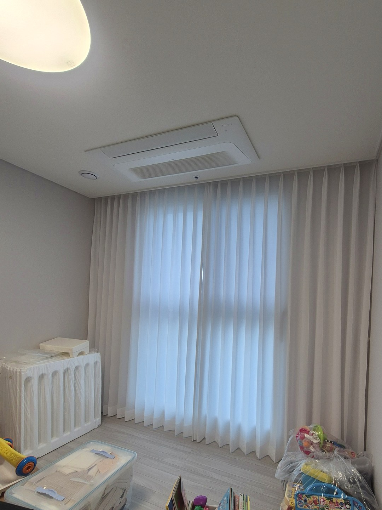
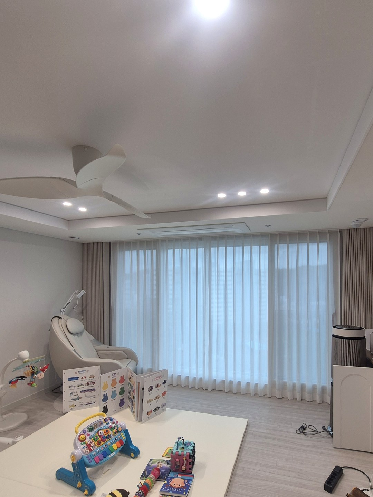
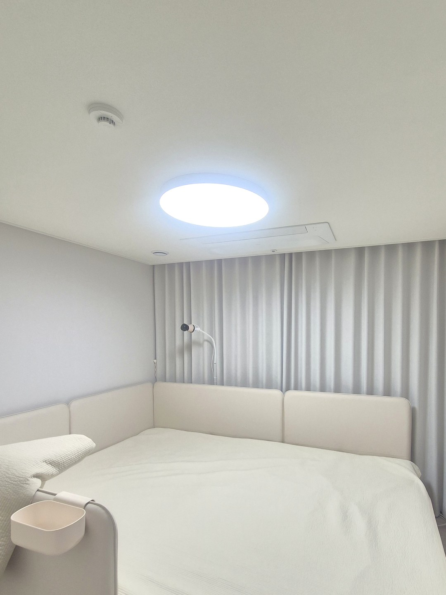
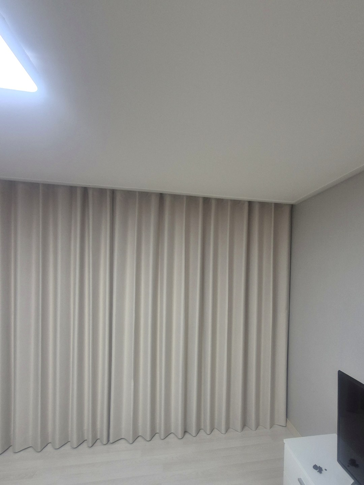

2026년 10월 23일 시공
포항 학산 한신더휴
커튼 수선·방 커튼 추가 시공후기

이번 현장은 포항 학산 한신더휴입니다.
새 아파트 입주를 앞두고 따솜을 찾아 주셨습니다.
집에는 태어난 지 몇 달 안 된 아기가 있었습니다.
그래서 시공 날짜와 시간은 아기 낮잠 시간을 피해서 잡았습니다.
새로 살 것과 고쳐 쓸 것을 먼저 나눴습니다
고객님은 전에 쓰시던 커튼을 가지고 계셨습니다.
펼쳐 보니 원단이 깨끗해서 버릴 이유가 없었습니다.
그래서 쓸 수 있는 커튼은 새 창 크기에 맞게 수선하기로 했습니다.
새로 맞춘 것은 커튼이 아예 없던 공간뿐입니다.
입주 때 전부 새로 하면 편하긴 하지만, 멀쩡한 커튼까지 바꾸면 비용이 크게 늘어납니다.
방마다 색을 어떻게 정했나
작은방과 거실은 흰 속커튼 위에 베이지 겉커튼을 겹쳤습니다.
낮에는 속커튼만 닫아도 빛이 부드럽게 들어오고, 밖에서 안이 잘 보이지 않습니다.

한 집 안에서 색 조합이 같으면 방을 오갈 때 눈에 거슬리는 데가 없습니다.
안방은 창이 아니라 벽을 기준으로
안방 창은 침대 머리 쪽 벽에 작게 나 있었습니다.
창 크기에만 맞추면 커튼 양옆으로 빛이 새고, 벽에 작은 커튼 하나만 덩그러니 남습니다.
그래서 벽 끝에서 끝까지, 천장 바로 아래에서 바닥까지 회색 겉커튼으로 덮었습니다.

회색은 흰 침구와 함께 있을 때 방을 차분하게 가라앉혀 줍니다.
수선해서 쓸 때 알아 두실 점
길이를 줄이거나 폭을 맞추는 것은 대부분 됩니다.
하지만 원래보다 길게 늘리는 것은 어렵습니다.
폭이 많이 모자라면 주름이 얕아질 수 있고, 새 커튼과 나란히 걸면 색이 조금 다르게 보일 수 있습니다.
그래서 수선할 커튼은 방문해서 직접 펼쳐 보고 쓸 수 있는지 말씀드립니다.
상담 전에 준비해 주시면 좋은 것
새 집 창 사진 한 장과, 가지고 계신 커튼을 펼쳐 찍은 사진 한 장을 보내 주세요.
아기가 있다면 낮잠 시간도 함께 알려 주시면 그 시간을 피해 일정을 잡겠습니다.
비슷한 시공





포항자이디오션(2026년 10월 입주) 커튼 준비 일정 보기 →